CODING AGENTS AS PIXEL WORLD MODELS
traex/DeepSeek-V4.1-Flash · 0085
点击播放 · 原生 RGB 像素
逐轮保存的候选
回放视频、检查图与代码变化。
每份候选均可单独播放。实际图片检查记录在下方工具轨迹中。
候选 01播放与检查图
点击播放 · 原生 RGB 像素

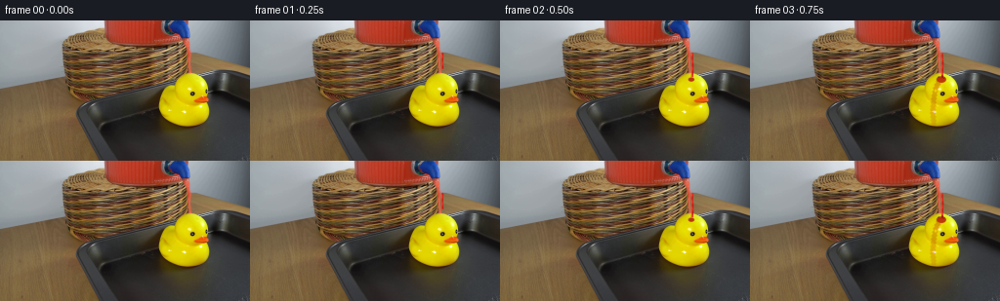
展开代码变化
--- 上一保存版本
+++ 本次保存版本
@@ -0,0 +1,392 @@
+from pathlib import Path
+
+import cv2
+import numpy as np
+from PIL import Image
+
+import artifact_io
+
+
+ROOT = Path(__file__).resolve().parent
+FPS = 4
+FRAME_COUNT = 20
+WIDTH = 256
+HEIGHT = 144
+SS = 4
+
+
+def smoothstep(edge0, edge1, value):
+ x = np.clip((value - edge0) / (edge1 - edge0), 0.0, 1.0)
+ return x * x * (3.0 - 2.0 * x)
+
+
+def ease_out(value):
+ value = np.clip(value, 0.0, 1.0)
+ return 1.0 - (1.0 - value) ** 3
+
+
+def highres_grid():
+ yy, xx = np.mgrid[0 : HEIGHT * SS, 0 : WIDTH * SS].astype(np.float32)
+ return xx / SS, yy / SS
+
+
+def downmask(mask):
+ image = (np.clip(mask, 0.0, 1.0) * 255.0 + 0.5).astype(np.uint8)
+ image = cv2.resize(image, (WIDTH, HEIGHT), interpolation=cv2.INTER_AREA)
+ return image.astype(np.float32) / 255.0
+
+
+def duck_mask_from_source(source):
+ rgb = source.astype(np.uint8)
+ hsv = cv2.cvtColor(rgb, cv2.COLOR_RGB2HSV)
+ r, g, b = rgb[:, :, 0], rgb[:, :, 1], rgb[:, :, 2]
+ mask = (
+ (r > 165)
+ & (g > 125)
+ & (b < 125)
+ & ((r.astype(np.int16) - g.astype(np.int16)) < 72)
+ & ((g.astype(np.int16) - b.astype(np.int16)) > 38)
+ & (hsv[:, :, 1] > 90)
+ & (hsv[:, :, 2] > 115)
+ )
+ roi = np.zeros_like(mask, dtype=np.uint8)
+ roi[45:124, 151:223] = 1
+ mask = (mask & (roi > 0)).astype(np.uint8)
+ mask = cv2.morphologyEx(mask, cv2.MORPH_CLOSE, np.ones((5, 5), np.uint8))
+ contours, _ = cv2.findContours(mask, cv2.RETR_EXTERNAL, cv2.CHAIN_APPROX_SIMPLE)
+ filled = np.zeros_like(mask)
+ if contours:
+ largest = max(contours, key=cv2.contourArea)
+ cv2.drawContours(filled, [largest], -1, 1, thickness=cv2.FILLED)
+ filled = cv2.morphologyEx(filled, cv2.MORPH_CLOSE, np.ones((3, 3), np.uint8))
+ return filled.astype(np.float32)
+
+
+def polyline_distance(xx, yy, points):
+ best = np.full(xx.shape, 1.0e6, dtype=np.float32)
+ for (x0, y0), (x1, y1) in zip(points[:-1], points[1:]):
+ dx, dy = x1 - x0, y1 - y0
+ length_sq = dx * dx + dy * dy
+ if length_sq <= 1.0e-6:
+ continue
+ q = np.clip(((xx - x0) * dx + (yy - y0) * dy) / length_sq, 0.0, 1.0)
+ px = x0 + q * dx
+ py = y0 + q * dy
+ best = np.minimum(best, np.hypot(xx - px, yy - py))
+ return best
+
+
+def path_progress(xx, yy, points):
+ y_start = points[0][1]
+ y_end = points[-1][1]
+ return np.clip((yy - y_start) / max(y_end - y_start, 1.0e-3), 0.0, 1.0)
+
+
+def render_puddle(xx, yy, t, duck_mask):
+ start = 1.35
+ amount = ease_out((t - start) / 3.25)
+ if amount <= 0.0:
+ return None
+
+ cx = 190.0
+ cy = 113.5
+ rx = 8.0 + 29.0 * amount
+ ry = 2.8 + 9.2 * amount
+ theta = np.arctan2((yy - cy) / max(ry, 0.1), (xx - cx) / max(rx, 0.1))
+ wobble = (
+ 1.0
+ + 0.055 * np.sin(3.0 * theta + 0.7)
+ + 0.035 * np.sin(7.0 * theta + 2.1)
+ + 0.018 * np.sin(11.0 * theta - 0.4)
+ )
+ radius = np.sqrt(((xx - cx) / max(rx, 0.1)) ** 2 + ((yy - cy) / max(ry, 0.1)) ** 2)
+ edge_softness = 0.035 + 0.018 * np.sin(theta * 5.0 + t * 1.8)
+ mask = smoothstep(wobble + edge_softness, wobble - edge_softness, radius)
+ mask *= smoothstep(125.7, 123.8, yy)
+ mask *= smoothstep(101.0, 104.5, yy)
+ duck_hr = cv2.resize(duck_mask, (WIDTH * SS, HEIGHT * SS), interpolation=cv2.INTER_LINEAR)
+ mask *= 1.0 - 0.96 * duck_hr
+ return mask
+
+
+def shade_puddle(xx, yy, t, puddle_mask):
+ cx = 190.0
+ cy = 113.5
+ dx = (xx - cx) / 31.0
+ dy = (yy - cy) / 9.0
+ radius = np.sqrt(dx * dx + dy * dy)
+ body = np.clip(1.0 - radius, 0.0, 1.0)
+
+ base = np.zeros((HEIGHT * SS, WIDTH * SS, 3), dtype=np.float32)
+ base[:, :, 0] = 72.0 + 92.0 * np.sqrt(body)
+ base[:, :, 1] = 5.0 + 18.0 * np.sqrt(body)
+ base[:, :, 2] = 4.0 + 8.0 * np.sqrt(body)
+
+ rim = smoothstep(0.74, 0.98, radius) * (1.0 - smoothstep(1.00, 1.06, radius))
+ base *= (1.0 - 0.28 * rim[:, :, None])
+
+ # Long, soft window reflections make the shallow puddle read as a liquid.
+ glint = np.exp(-((xx - (171.0 + 2.5 * np.sin(t * 1.3))) / 10.5) ** 2)
+ glint *= np.exp(-((yy - 112.2) / 1.45) ** 2)
+ glint += 0.55 * np.exp(-((xx - 207.0) / 7.0) ** 2) * np.exp(-((yy - 115.4) / 1.1) ** 2)
+ glint *= puddle_mask
+ base += glint[:, :, None] * np.array([92.0, 38.0, 28.0], dtype=np.float32)
+
+ # Ripples are confined to the fluid and fade before reaching the rim.
+ for event in (1.75, 2.75, 3.75, 4.65):
+ age = t - event
+ if 0.0 <= age <= 0.72:
+ ring_radius = 2.0 + 15.0 * age
+ ring = np.exp(-((np.hypot((xx - 189.0) / 1.45, yy - 113.4) - ring_radius) / 0.32) ** 2)
+ ring *= (1.0 - age / 0.72) ** 2 * puddle_mask
+ base += ring[:, :, None] * np.array([76.0, 25.0, 17.0], dtype=np.float32)
+
+ alpha = 0.82 * puddle_mask
+ return np.clip(base, 0.0, 255.0), alpha
+
+
+def render_stream(xx, yy, t):
+ start_y = 33.0
+ reach = smoothstep(0.10, 0.58, t)
+ end_y = 46.5 + 12.8 * reach + 0.35 * np.sin(t * 8.0)
+ if reach <= 0.0:
+ return None
+
+ center = 196.8 + 0.28 * np.sin((yy - start_y) * 0.34 + t * 5.2)
+ center += 0.008 * np.maximum(yy - start_y, 0.0)
+ width = 1.18 + 0.20 * np.sin(t * 3.1) + 0.12 * smoothstep(end_y - 5.0, end_y, yy)
+ across = np.abs(xx - center)
+ mask = smoothstep(width, width * 0.55, across)
+ mask *= smoothstep(start_y - 0.7, start_y + 0.8, yy)
+ mask *= smoothstep(end_y + 0.6, end_y - 0.8, yy)
+
+ phase = yy * 0.85 - t * 18.0
+ band = 0.5 + 0.5 * np.sin(phase)
+ core = np.zeros((HEIGHT * SS, WIDTH * SS, 3), dtype=np.float32)
+ core[:, :, 0] = 188.0 + 34.0 * band
+ core[:, :, 1] = 22.0 + 15.0 * band
+ core[:, :, 2] = 15.0 + 10.0 * band
+
+ highlight = np.exp(-((xx - (center - width * 0.42)) / 0.28) ** 2)
+ highlight *= mask
+ core += highlight[:, :, None] * np.array([61.0, 67.0, 50.0], dtype=np.float32)
+
+ dark_edge = smoothstep(width * 0.52, width, across) * mask
+ core -= dark_edge[:, :, None] * np.array([63.0, 10.0, 7.0], dtype=np.float32)
+ return np.clip(core, 0.0, 255.0), 0.92 * mask
+
+
+def render_duck_coat(xx, yy, t, duck_mask):
+ if t < 0.40:
+ return None
+
+ age = t - 0.40
+ growth = ease_out(age / 2.8)
+
+ crown_r = 2.0 + 7.0 * growth
+ crown = smoothstep(
+ crown_r + 0.7,
+ crown_r - 0.7,
+ np.hypot((xx - 195.8) / 1.15, (yy - 60.5) / 0.78),
+ )
+
+ # Three gravity-fed runnels keep the coating asymmetric and believable.
+ left_path = [(195.0, 60.0), (190.0, 65.0), (184.0, 72.0), (180.6, 81.0), (181.5, 91.0), (180.5, 99.0)]
+ mid_path = [(194.0, 61.0), (190.0, 70.0), (188.0, 81.0), (187.0, 94.0), (188.0, 105.0)]
+ right_path = [(198.0, 61.0), (203.0, 68.0), (205.0, 77.0), (205.5, 88.0), (207.0, 96.0)]
+
+ paths = []
+ for points, width, delay in (
+ (left_path, 2.15, 0.20),
+ (mid_path, 2.55, 0.05),
+ (right_path, 1.75, 0.38),
+ ):
+ local = smoothstep(delay, delay + 0.65, age)
+ distance = polyline_distance(xx, yy, points)
+ progress = path_progress(xx, yy, points)
+ reach = smoothstep(0.02, 1.0, local - 0.15 * progress)
+ ripple = 1.0 + 0.18 * np.sin(yy * 1.7 + t * 4.2)
+ runnel = smoothstep(width * ripple + 0.55, width * ripple - 0.55, distance)
+ runnel *= reach
+ paths.append(runnel)
+
+ runnels = np.maximum.reduce(paths)
+ sheet_r = 4.0 + 8.0 * growth
+ sheet = smoothstep(
+ sheet_r + 0.9,
+ sheet_r - 0.9,
+ np.hypot((xx - 192.0) / 1.25, (yy - 68.0) / 0.92),
+ )
+ sheet *= smoothstep(0.45, 0.92, age)
+
+ coverage = np.maximum.reduce([crown, runnels, 0.58 * sheet])
+ coverage *= 0.94
+ duck_hr = cv2.resize(duck_mask, (WIDTH * SS, HEIGHT * SS), interpolation=cv2.INTER_LINEAR)
+ coverage *= duck_hr
+
+ # Keep the eye and beak legible while leaving wet beads on their edges.
+ for ex, ey, er in ((190.0, 72.0, 1.45), (202.0, 71.0, 1.55)):
+ eye = smoothstep(er + 0.45, er - 0.45, np.hypot(xx - ex, yy - ey))
+ coverage *= 1.0 - 0.72 * eye
+ beak = (
+ smoothstep(203.0, 205.0, xx)
+ * smoothstep(73.0, 75.0, yy)
+ * smoothstep(88.0, 86.0, yy)
+ * smoothstep(222.0, 219.0, xx)
+ )
+ coverage *= 1.0 - 0.55 * beak
+
+ lum = np.zeros_like(xx)
+ color = np.zeros((HEIGHT * SS, WIDTH * SS, 3), dtype=np.float32)
+ color[:, :, 0] = 190.0 + 20.0 * np.sin(yy * 0.28 + t * 1.5)
+ color[:, :, 1] = 19.0 + 11.0 * np.clip((yy - 56.0) / 52.0, 0.0, 1.0)
+ color[:, :, 2] = 13.0 + 6.0 * np.clip((yy - 56.0) / 52.0, 0.0, 1.0)
+
+ sheen = np.exp(-((xx - (183.0 + 2.0 * np.sin(t * 1.4))) / 1.7) ** 2)
+ sheen *= np.exp(-((yy - 77.0) / 13.0) ** 2)
+ sheen *= coverage
+ color += sheen[:, :, None] * np.array([58.0, 58.0, 43.0], dtype=np.float32)
+
+ edge = smoothstep(0.12, 0.55, coverage) * (1.0 - smoothstep(0.55, 0.92, coverage))
+ color -= edge[:, :, None] * np.array([48.0, 7.0, 5.0], dtype=np.float32)
+ alpha = np.clip(coverage * 0.88, 0.0, 0.92)
+ return np.clip(color, 0.0, 255.0), alpha
+
+
+def add_particle(canvas, color_canvas, alpha_canvas, x, y, radius, color, alpha):
+ x0 = max(0, int(np.floor((x - radius - 1.0) * SS)))
+ x1 = min(WIDTH * SS, int(np.ceil((x + radius + 1.0) * SS)))
+ y0 = max(0, int(np.floor((y - radius - 1.0) * SS)))
+ y1 = min(HEIGHT * SS, int(np.ceil((y + radius + 1.0) * SS)))
+ if x0 >= x1 or y0 >= y1:
+ return
+ yy, xx = np.mgrid[y0:y1, x0:x1].astype(np.float32)
+ xx /= SS
+ yy /= SS
+ dist = np.hypot(xx - x, yy - y)
+ mask = smoothstep(radius + 0.32, radius - 0.22, dist) * alpha
+ color_canvas[y0:y1, x0:x1] = (
+ color_canvas[y0:y1, x0:x1] * (1.0 - mask[:, :, None])
+ + np.asarray(color, dtype=np.float32) * mask[:, :, None]
+ )
+ alpha_canvas[y0:y1, x0:x1] = np.maximum(alpha_canvas[y0:y1, x0:x1], mask)
+
+
+def render_splashes_and_drips(xx, yy, t):
+ color = np.zeros((HEIGHT * SS, WIDTH * SS, 3), dtype=np.float32)
+ alpha = np.zeros((HEIGHT * SS, WIDTH * SS), dtype=np.float32)
+
+ # Impact crown: a few small, asymmetric beads at the point of contact.
+ if t >= 0.52:
+ pulse = 0.5 + 0.5 * np.sin(t * 11.0)
+ for dx, dy, radius in ((-2.8, -0.6, 0.62), (2.5, -0.2, 0.72), (0.7, -1.8, 0.55)):
+ add_particle(
+ None,
+ color,
+ alpha,
+ 195.9 + dx,
+ 59.0 + dy - 0.35 * pulse,
+ radius,
+ (228.0, 53.0, 32.0),
+ 0.88,
+ )
+
+ # Short ballistic droplets make the continuous impact feel energetic.
+ particles = (
+ (-2.0, -15.0, 0.15, 0.36),
+ (4.0, -20.0, 0.15, 0.31),
+ (-8.0, -13.0, 0.17, 0.29),
+ (10.0, -12.0, 0.18, 0.30),
+ (1.5, -22.0, 0.22, 0.28),
+ (-5.0, -18.0, 0.28, 0.26),
+ )
+ for burst in (0.62, 1.52, 2.43, 3.35, 4.28):
+ for idx, (vx, vy, delay, life) in enumerate(particles):
+ age = t - burst - delay
+ if 0.0 <= age <= life:
+ px = 196.0 + vx * age + 0.7 * np.sin(age * 24.0 + idx)
+ py = 58.2 + vy * age + 122.0 * age * age
+ radius = 0.50 + 0.24 * (1.0 - age / life)
+ fade = 0.90 * (1.0 - age / life) ** 0.45
+ add_particle(None, color, alpha, px, py, radius, (226.0, 43.0, 27.0), fade)
+
+ # A periodic bead runs off the lower-left edge of the duck into the puddle.
+ if t >= 1.65:
+ for phase in (0.0, 0.72):
+ local = (t - 1.65 - phase) % 0.82
+ if local < 0.46:
+ py = 101.0 + 12.0 * (local / 0.46)
+ px = 178.4 + 0.3 * np.sin(local * 12.0)
+ add_particle(None, color, alpha, px, py, 0.72, (210.0, 30.0, 18.0), 0.88)
+ add_particle(None, color, alpha, px - 0.18, py - 0.20, 0.23, (255.0, 112.0, 74.0), 0.70)
+
+ # Thin runoff lines remain visible where fluid leaves the duck's body.
+ if t >= 2.0:
+ line_alpha = smoothstep(2.0, 2.8, t)
+ for x, y0, y1, width in ((178.2, 96.0, 102.0, 0.45), (207.0, 93.0, 100.0, 0.36)):
+ line = smoothstep(width, width * 0.35, np.abs(xx - x))
+ line *= smoothstep(y0 - 0.5, y0 + 0.5, yy) * smoothstep(y1 + 0.5, y1 - 0.5, yy)
+ line *= line_alpha
+ color += line[:, :, None] * np.array([164.0, 19.0, 12.0], dtype=np.float32)
+ alpha = np.maximum(alpha, 0.78 * line)
+
+ return color, alpha
+
+
+def composite(base, color, alpha):
+ a = alpha[:, :, None]
+ return np.clip(base * (1.0 - a) + color * a, 0.0, 255.0)
+
+
+def composite_native(base, color_hr, alpha_hr):
+ color = cv2.resize(color_hr, (WIDTH, HEIGHT), interpolation=cv2.INTER_AREA)
+ alpha = downmask(alpha_hr)
+ return composite(base, color, alpha)
+
+
+def render_frame(source, duck_mask, xx, yy, frame_index):
+ if frame_index == 0:
+ return source.copy()
+
+ t = frame_index / FPS
+ base = source.astype(np.float32).copy()
+
+ puddle_mask = render_puddle(xx, yy, t, duck_mask)
+ if puddle_mask is not None:
+ puddle_rgb, puddle_alpha = shade_puddle(xx, yy, t, puddle_mask)
+ base = composite_native(base, puddle_rgb, puddle_alpha)
+
+ stream = render_stream(xx, yy, t)
+ if stream is not None:
+ stream_color, stream_alpha = stream
+ base = composite_native(base, stream_color, stream_alpha)
+
+ coat = render_duck_coat(xx, yy, t, duck_mask)
+ if coat is not None:
+ coat_color, coat_alpha = coat
+ base = composite_native(base, coat_color, coat_alpha)
+
+ splash_color, splash_alpha = render_splashes_and_drips(xx, yy, t)
+ base = composite_native(base, splash_color, splash_alpha)
+
+ return np.clip(base + 0.5, 0.0, 255.0).astype(np.uint8)
+
+
+def main():
+ source = np.asarray(Image.open(ROOT / "first_frame.png").convert("RGB"), dtype=np.uint8)
+ if source.shape != (HEIGHT, WIDTH, 3):
+ raise ValueError(f"Unexpected first-frame shape: {source.shape}")
+
+ duck_mask = duck_mask_from_source(source)
+ xx, yy = highres_grid()
+ frames = [render_frame(source, duck_mask, xx, yy, index) for index in range(FRAME_COUNT)]
+
+ if not np.array_equal(frames[0], source):
+ raise AssertionError("Frame 00 must be pixel-identical to first_frame.png")
+
+ artifact_io.save(frames, ROOT)
+ print(f"Wrote {len(frames)} frames at {WIDTH}x{HEIGHT}, {FPS} fps")
+
+
+if __name__ == "__main__":
+ main()
候选 02播放与检查图
点击播放 · 原生 RGB 像素
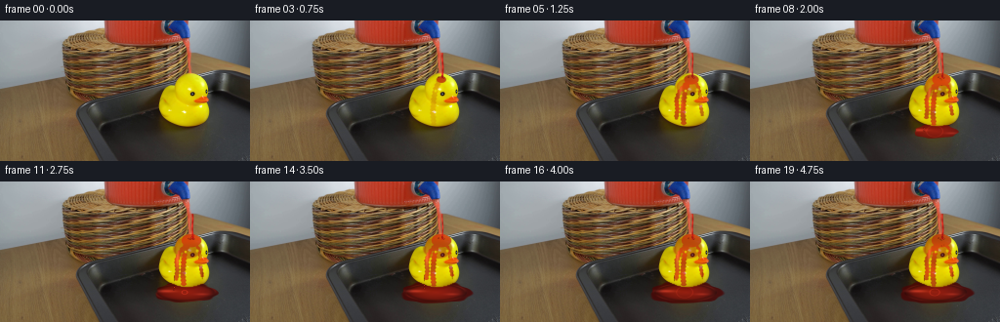
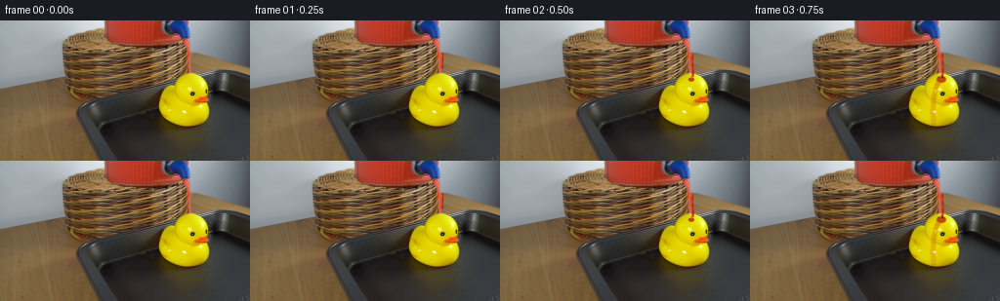
展开代码变化
--- 上一保存版本
+++ 本次保存版本
@@ -125,6 +125,10 @@
rim = smoothstep(0.74, 0.98, radius) * (1.0 - smoothstep(1.00, 1.06, radius))
base *= (1.0 - 0.28 * rim[:, :, None])
+ meniscus = smoothstep(0.92, 1.0, radius) * (1.0 - smoothstep(1.0, 1.075, radius))
+ meniscus *= 0.5 + 0.5 * np.sin(np.arctan2(dy, dx) * 4.0 + t * 1.1)
+ base += meniscus[:, :, None] * np.array([54.0, 12.0, 7.0], dtype=np.float32)
+
# Long, soft window reflections make the shallow puddle read as a liquid.
glint = np.exp(-((xx - (171.0 + 2.5 * np.sin(t * 1.3))) / 10.5) ** 2)
glint *= np.exp(-((yy - 112.2) / 1.45) ** 2)
@@ -152,24 +156,24 @@
if reach <= 0.0:
return None
- center = 196.8 + 0.28 * np.sin((yy - start_y) * 0.34 + t * 5.2)
- center += 0.008 * np.maximum(yy - start_y, 0.0)
- width = 1.18 + 0.20 * np.sin(t * 3.1) + 0.12 * smoothstep(end_y - 5.0, end_y, yy)
+ center = 196.8 + 0.34 * np.sin((yy - start_y) * 0.29 + t * 4.7)
+ center += 0.013 * np.maximum(yy - start_y, 0.0)
+ width = 1.26 + 0.24 * np.sin(t * 3.1) + 0.22 * smoothstep(end_y - 5.0, end_y, yy)
across = np.abs(xx - center)
- mask = smoothstep(width, width * 0.55, across)
+ mask = smoothstep(width, width * 0.45, across)
mask *= smoothstep(start_y - 0.7, start_y + 0.8, yy)
mask *= smoothstep(end_y + 0.6, end_y - 0.8, yy)
phase = yy * 0.85 - t * 18.0
band = 0.5 + 0.5 * np.sin(phase)
core = np.zeros((HEIGHT * SS, WIDTH * SS, 3), dtype=np.float32)
- core[:, :, 0] = 188.0 + 34.0 * band
- core[:, :, 1] = 22.0 + 15.0 * band
- core[:, :, 2] = 15.0 + 10.0 * band
+ core[:, :, 0] = 178.0 + 42.0 * band
+ core[:, :, 1] = 18.0 + 18.0 * band
+ core[:, :, 2] = 13.0 + 12.0 * band
highlight = np.exp(-((xx - (center - width * 0.42)) / 0.28) ** 2)
highlight *= mask
- core += highlight[:, :, None] * np.array([61.0, 67.0, 50.0], dtype=np.float32)
+ core += highlight[:, :, None] * np.array([66.0, 72.0, 55.0], dtype=np.float32)
dark_edge = smoothstep(width * 0.52, width, across) * mask
core -= dark_edge[:, :, None] * np.array([63.0, 10.0, 7.0], dtype=np.float32)
@@ -249,7 +253,7 @@
edge = smoothstep(0.12, 0.55, coverage) * (1.0 - smoothstep(0.55, 0.92, coverage))
color -= edge[:, :, None] * np.array([48.0, 7.0, 5.0], dtype=np.float32)
- alpha = np.clip(coverage * 0.88, 0.0, 0.92)
+ alpha = np.clip(coverage * 0.79, 0.0, 0.84)
return np.clip(color, 0.0, 255.0), alpha
可观测工具轨迹
实际执行的命令与返回图片。
命令 1exit 0
/bin/bash -c "pwd && rg --files -g 'prompt.txt' -g 'GENERATION_RULES.md' -g '*.md' -g '*.py' -g '*.sh' -g '*.json' | sort"
命令 2exit 0
/bin/bash -c "sed -n '1,240p' prompt.txt"
命令 3exit 0
/bin/bash -c "sed -n '1,320p' GENERATION_RULES.md"
命令 4exit 0
/bin/bash -c "find . -maxdepth 2 -type f -printf '%P\\n' | sort | head -200"
命令 5exit 0
/bin/bash -c "sed -n '1,320p' artifact_io.py"
命令 6exit 127
/bin/bash -c "file first_frame.png && identify -verbose first_frame.png | sed -n '1,80p'"
命令 7exit 0
/bin/bash -c "python - <<'PY'
from PIL import Image
im=Image.open('first_frame.png')
print(im.mode, im.size)
PY"命令 8exit 0
/bin/bash -c "python - <<'PY'
from PIL import Image
im=Image.open('first_frame.png')
im.resize((1024,576), Image.Resampling.NEAREST).save('.tmp/first_4x.png')
im.crop((160,0,230,90)).resize((560,720), Image.Resampling.NEAREST).save('.tmp/spout_8x.png')
im.crop((150,45,230,130)).resize((640,680), Image.Resampling.NEAREST).save('.tmp/duck_8x.png')
PY"命令 9exit 0
/bin/bash -c "python - <<'PY'
from PIL import Image, ImageDraw
im=Image.open('first_frame.png').convert('RGB').resize((1024,576), Image.Resampling.NEAREST)
d=ImageDraw.Draw(im)
for x in range(0,256,10):
X=x*4
d.line((X,0,X,576),fill=(0,255,255),width=1)
d.text((X+2,2),str(x),fill=(0,255,255))
for y in range(0,144,10):
Y=y*4
d.line((0,Y,1024,Y),fill=(0,255,255),width=1)
d.text((2,Y+2),str(y),fill=(0,255,255))
im.save('.tmp/grid.png')
PY"命令 10exit 0
/bin/bash -c "python - <<'PY'
from PIL import Image
im=Image.open('first_frame.png')
# inspect key crop at 12x lanczos and nearest
for name,box in [('head',(170,48,212,80)),('body',(158,68,221,120)),('spout',(185,0,207,45)),('tray',(100,65,256,144)),('dispenser',(145,0,205,55))]:
crop=im.crop(box)
crop.resize((crop.width*12,crop.height*12),Image.Resampling.NEAREST).save(f'.tmp/{name}_nearest.png')
crop.resize((crop.width*12,crop.height*12),Image.Resampling.LANCZOS).save(f'.tmp/{name}_smooth.png')
PY"命令 11exit 0
/bin/bash -c "python - <<'PY' import importlib.util for m in ['numpy','PIL','scipy','cv2','imageio','matplotlib']: print(m, bool(importlib.util.find_spec(m))) PY"
命令 12exit 0
/bin/bash -c "python - <<'PY'
from PIL import Image
import numpy as np
im=np.array(Image.open('first_frame.png'))
# print selected colors/ranges
for y in [20,25,30,35,40,45,50,55,60,65,70,75,80,85,90,95,100,105,110,115,120,125,130,135,140]:
row=im[y]
reds=np.where((row[:,0]>80)&(row[:,0]>row[:,1]*1.35)&(row[:,0]>row[:,2]*1.25))[0]
print(y, (reds.min(),reds.max(),len(reds)) if len(reds) else None)
PY"命令 13exit 0
/bin/bash -c "python - <<'PY'
from PIL import Image
im=Image.open('first_frame.png')
# exact source pixel patch summary around spout/head
for y in range(0,121,4):
print(y, [im.getpixel((x,y)) for x in range(184,211,4)])
PY"命令 14exit 0
/bin/bash -c "python - <<'PY'
from PIL import Image
im=Image.open('first_frame.png')
box=(176,0,220,75); crop=im.crop(box); crop.resize((44*16,75*16),Image.Resampling.NEAREST).save('.tmp/pourzone_nearest.png')
PY"命令 15exit 0
/bin/bash -c "python - <<'PY'
from PIL import Image, ImageDraw
im=Image.open('first_frame.png').crop((160,0,230,125)).resize((700,1250),Image.Resampling.NEAREST)
d=ImageDraw.Draw(im)
for x in range(160,231,5):
X=(x-160)*10
d.line((X,0,X,1250),fill=(0,255,255),width=1)
d.text((X+2,2),str(x),fill=(0,255,255))
for y in range(0,126,5):
Y=y*10
d.line((0,Y,700,Y),fill=(0,255,255),width=1)
d.text((2,Y+2),str(y),fill=(0,255,255))
im.save('.tmp/detail_grid.png')
PY"命令 16exit 0
/bin/bash -c "python - <<'PY'
from PIL import Image
im=Image.open('first_frame.png')
# print spout area in text with R,G,B table, rows 20..52 x 190..203
for y in range(20,53,2):
print('y',y)
print(' '.join(f'{im.getpixel((x,y))[0]:3d},{im.getpixel((x,y))[1]:3d},{im.getpixel((x,y))[2]:3d}' for x in range(189,204,2)))
PY"命令 17exit 1
/bin/bash -c 'python generate.py'
命令 18exit 0
/bin/bash -c 'python generate.py'
命令 19exit 0
/bin/bash -c "python - <<'PY'
from PIL import Image
for i in [4,8,12,16,19]:
im=Image.open(f'frames/{i:02d}.png')
im.crop((155,20,230,130)).resize((600,880),Image.Resampling.NEAREST).save(f'.tmp/final_{i:02d}_8x.png')
PY"命令 20exit 0
/bin/bash -c 'python generate.py'
命令 21exit 0
/bin/bash -c "python - <<'PY'
from pathlib import Path
import json
import numpy as np
from PIL import Image
root=Path('.')
src=np.array(Image.open('first_frame.png').convert('RGB'))
frames=[np.array(Image.open(root/'frames'/f'{i:02d}.png').convert('RGB')) for i in range(20)]
print('frame count:', len(frames))
print('all shape:', all(f.shape==(144,256,3) for f in frames))
print('dtype:', {str(f.dtype) for f in frames})
print('frame00 identical:', np.array_equal(frames[0],src))
print('changed pixels from frame00:', [int(np.any(f"'!=src,axis=2).sum()) for f in frames])
print('"'changed pixels consecutive:', [int(np.any(frames[i]"'!=frames[i-1],axis=2).sum()) for i in range(1,20)])
for p in ['"'pixels.npz','index.html','inspection.png','transition_check.png','generate.py']:
print(p, (root/p).is_file(), (root/p).stat().st_size if (root/p).is_file() else None)
with np.load('pixels.npz') as z:
print('pixels:',z['pixels'].shape,z['pixels'].dtype)
print('index payload:',len((root/'index.html').read_text()))
PY"命令 22exit 0
/bin/bash -c "python - <<'PY'
from PIL import Image
for i in [1,2,3,6,12,19]:
im=Image.open(f'frames/{i:02d}.png')
im.crop((160,20,230,130)).resize((560,880),Image.Resampling.NEAREST).save(f'.tmp/check_{i:02d}.png')
PY"命令 23exit 0
/bin/bash -c 'python -m py_compile generate.py && git status --short 2>/dev/null || true'
命令 24exit 0
/bin/bash -c "ls -lh generate.py first_frame.png prompt.txt GENERATION_RULES.md artifact_io.py player_template.html pixels.npz index.html inspection.png transition_check.png frames | sed -n '1,80p'"
视觉工具实际返回图片 1
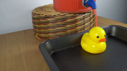
视觉工具实际返回图片 2
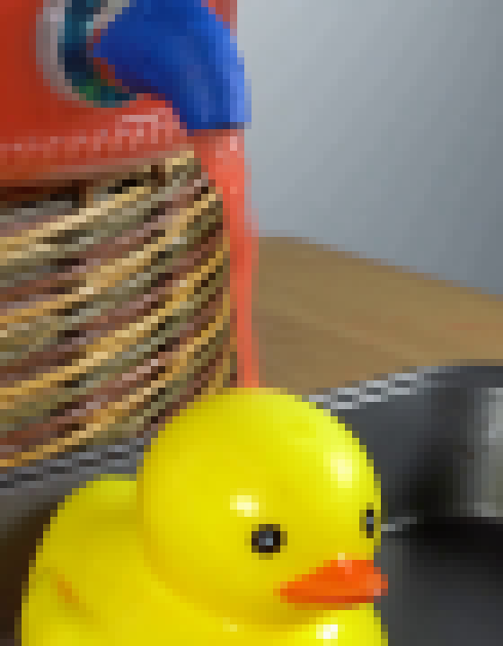
视觉工具实际返回图片 3
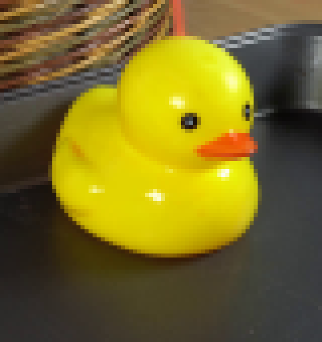
视觉工具实际返回图片 4
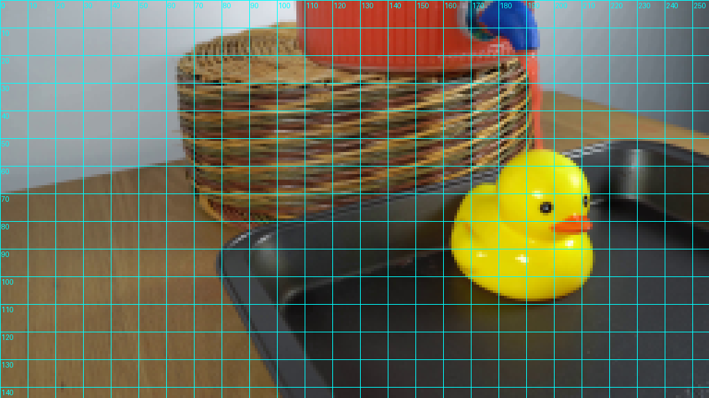
视觉工具实际返回图片 5
视觉工具实际返回图片 6
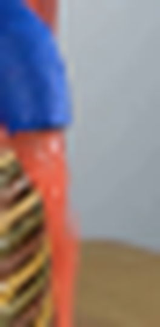
视觉工具实际返回图片 7
视觉工具实际返回图片 8
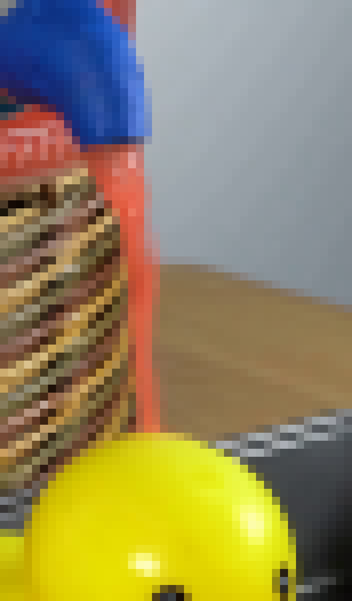
视觉工具实际返回图片 9
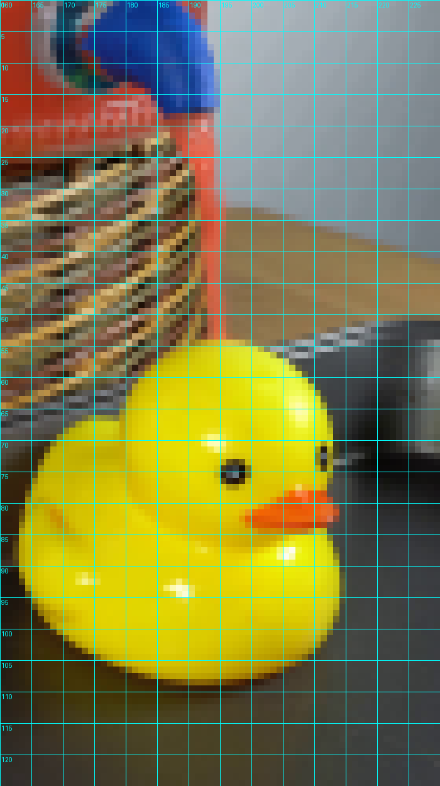
视觉工具实际返回图片 10
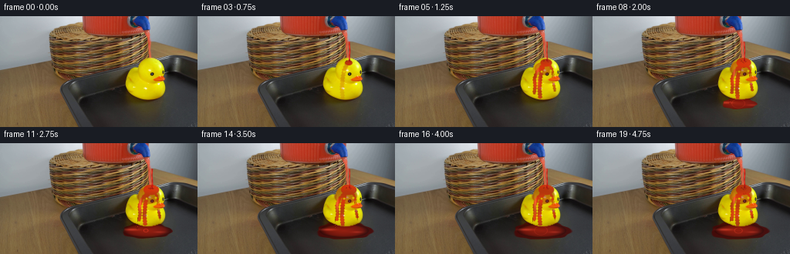
视觉工具实际返回图片 11
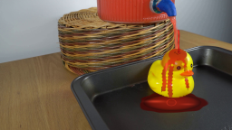
视觉工具实际返回图片 12
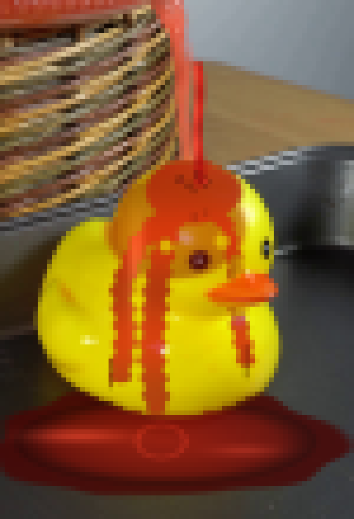
视觉工具实际返回图片 13
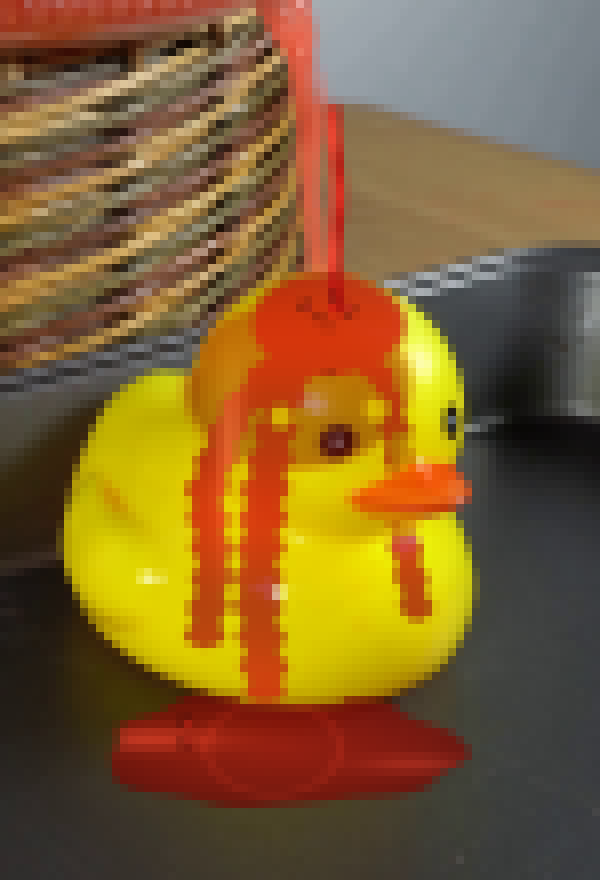
视觉工具实际返回图片 14
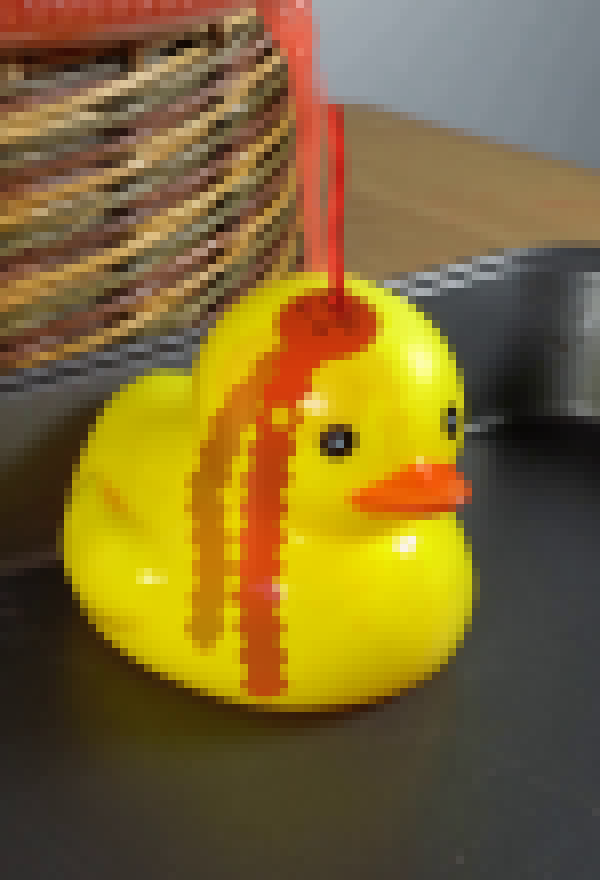
视觉工具实际返回图片 15

视觉工具实际返回图片 16
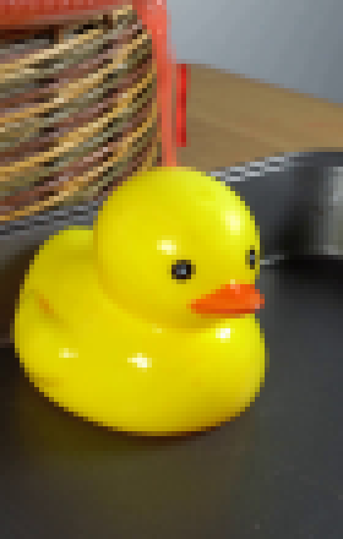
视觉工具实际返回图片 17
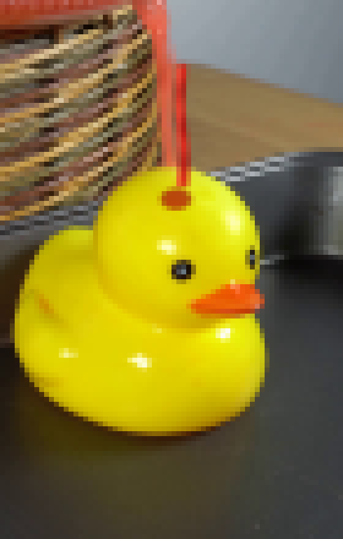
视觉工具实际返回图片 18
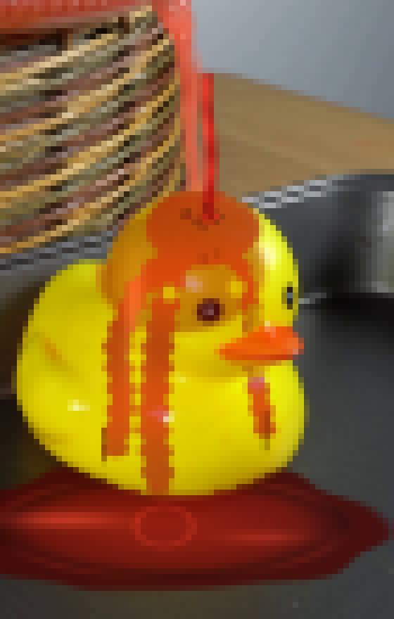
视觉工具实际返回图片 19
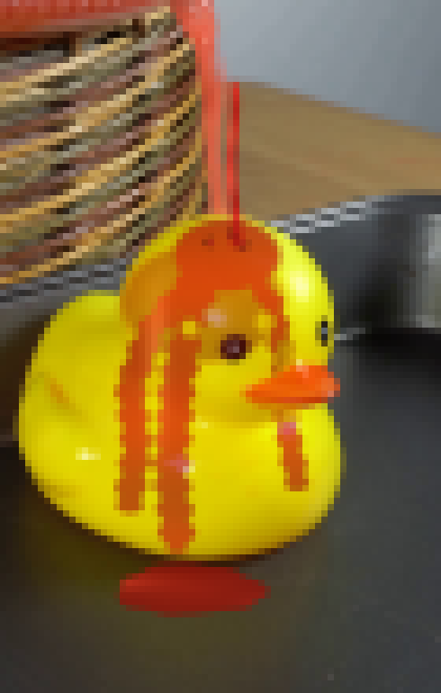
保存候选 2 份；完成命令 24 次；可验证图片返回 19 张。原始 API 响应与完整日志保留在本地。